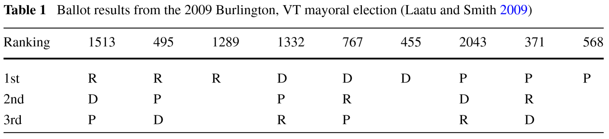
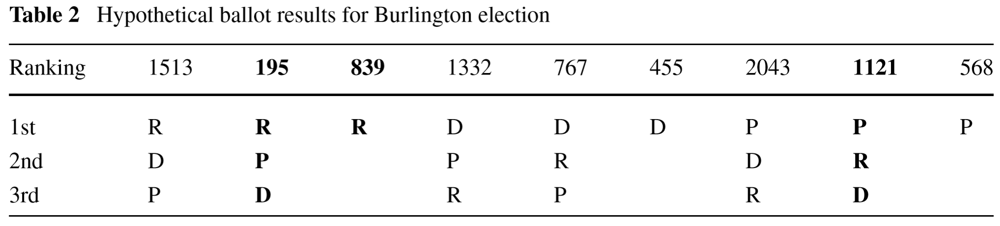

Ornstein, Joseph T. and Norman, Robert Z. “Frequency of Monotonicity Failure Under Instant Runoff Voting: estimates based on a spatial model of elections” Public Choice 161:1-9.
Instant Runoff Voting (IRV) is an alternative electoral system where voters rank candidates in order of preference, and candidates are successively eliminated until one receives a majority of first-place votes. Although it has many appealing properties, it suffers from a defect called nonmonotonicity. In some cases, increasing support for a winning candidate can cause that candidate to lose, and decreasing support for a losing candidate can cause that candidate to win.
An open question, however, is how likely nonmonotonic outcomes would be in practice under IRV. In this paper, Bob Norman and I detail the conditions under which an election profile violates monotonicity, and use a simulated spatial model of elections to assess how frequently those conditions should occur. We conclude that IRV is particularly suspectible to monotonicity failure in threeway competitive elections, exhibiting a monotonicity failure rate of about 15% on average.
Here’s an example of a monotonicity failure. In 2009, the city of Burlington, VT held a mayoral election using IRV. There were three strong candidates in the running: the Progressive incumbent, a Democrat, and a Republican. The actual ranked choice votes looked like this:

Under IRV, no candidate received a majority in the first round of voting, so candidates were eliminated until someone was. In this case, the Democratic candidate received the fewest first place votes, so she was eliminated and her support redistributed according to the voters rankings. After this redistribution, the Progressive received a majority of first-place votes.
But suppose that Burlington, VT were more progressive than it actually was in 2009. Shifting 750 votes from the Republican to the Progressive yields the following profile:

In a monotonic voting system, the Progressive would still win. But under IRV, the Progressive loses! The Republican has the fewest first-place votes in the first round, so he is eliminated, and his votes are redistributed mostly to the Democrat. In the final round, the Democrat receives a majority, and wins.
In the paper, we show mathematically that monotonicity failures will occur under IRV when the following two conditions hold:
We then develop an agent-based computational model to assess how likely those conditions are to hold in practice. Voters are represented as points in a two-dimensional issue space, and candidates propose platforms in that space, attempting to gather the most votes. In the simulation, monotonicity failure becomes more common in threeway competitive elections, regardless of the underlying distribution of political opinion.
Figure 5 from Ornstein & Norman (2014)